Lecture 03: Architectures, Hyperparameters
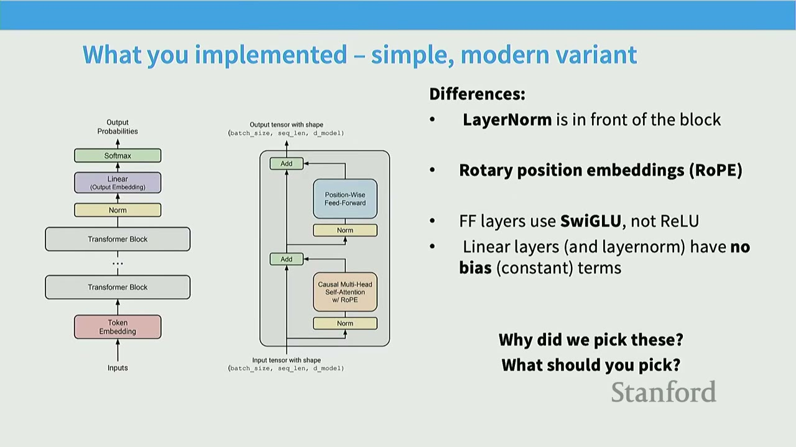
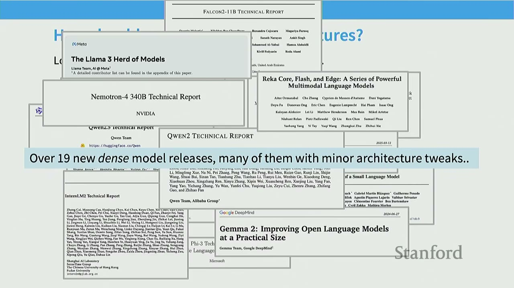
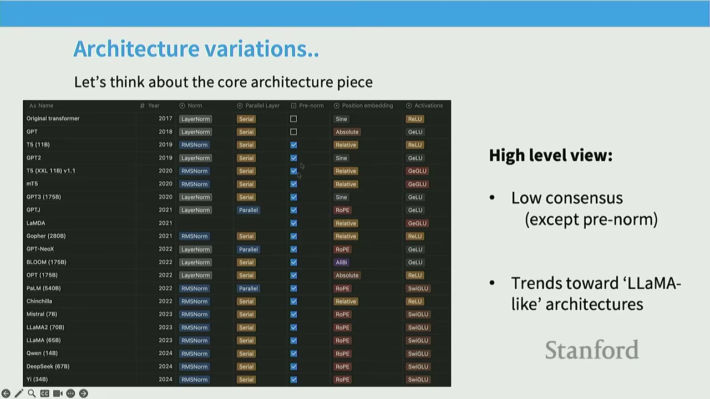
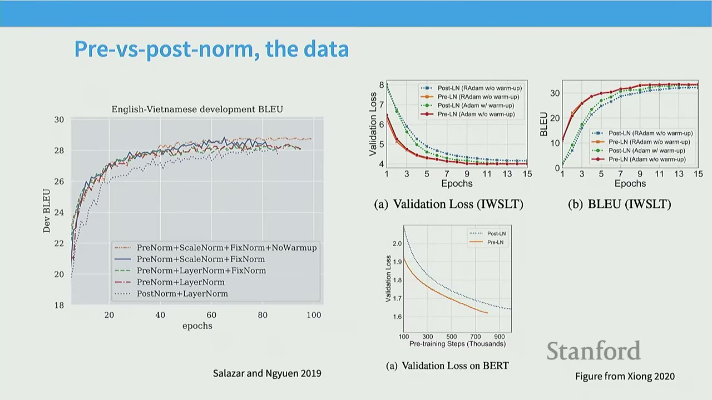
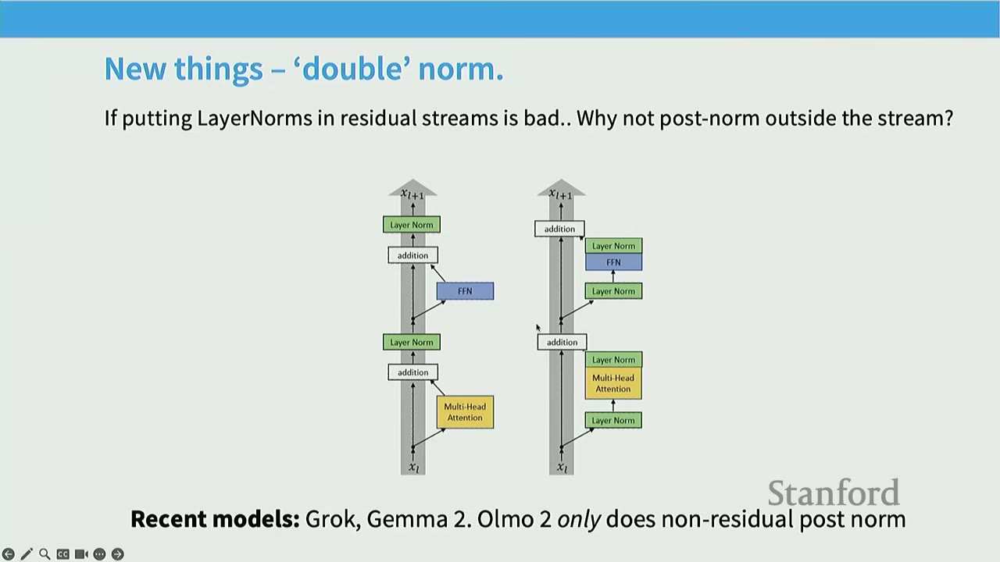
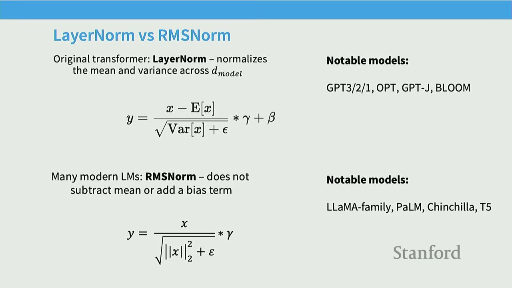
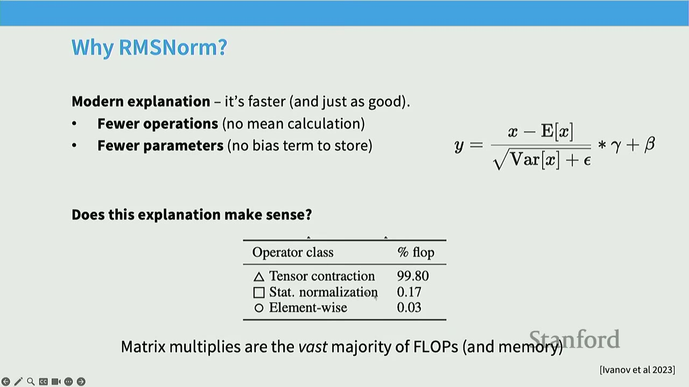
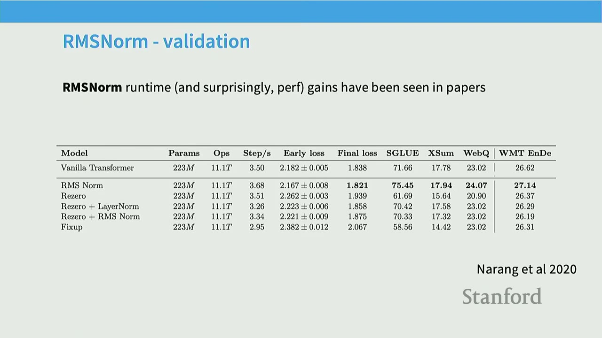
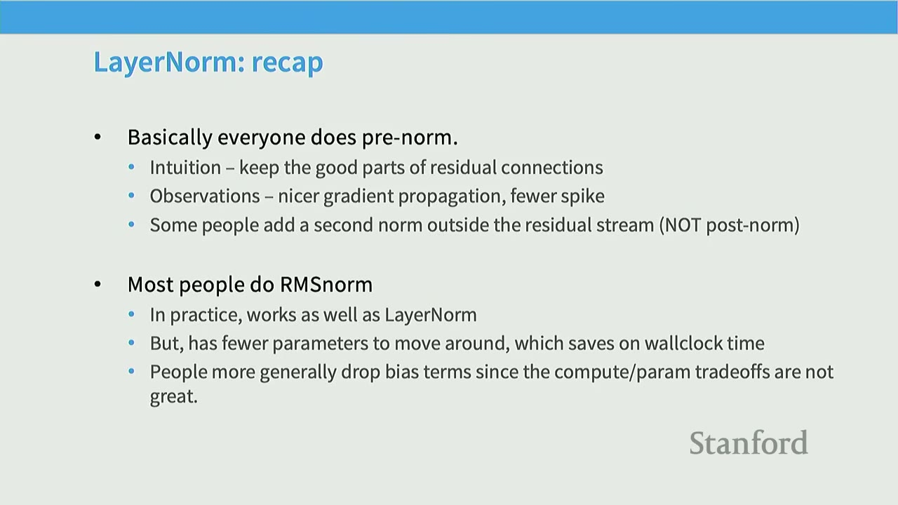
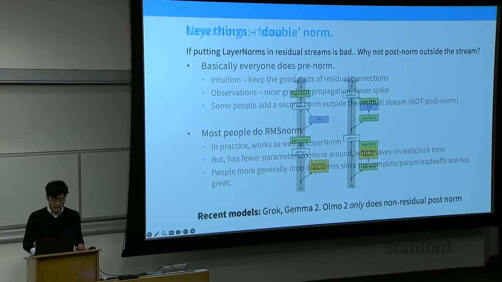
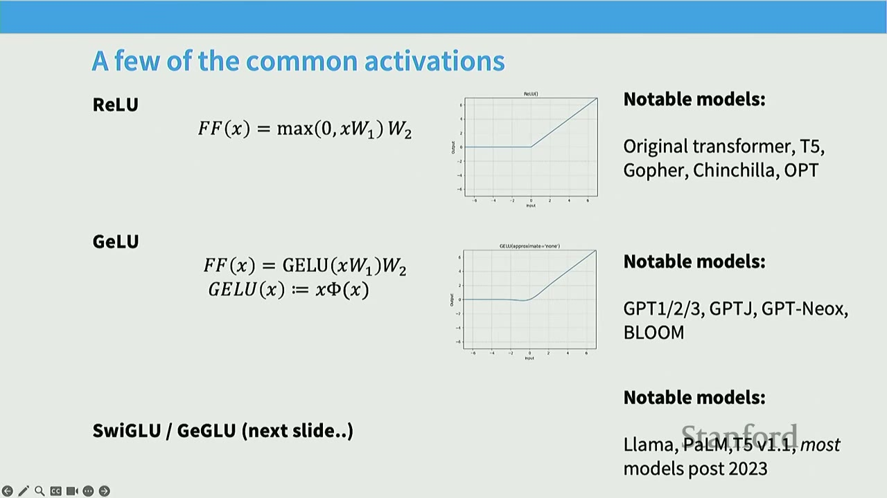
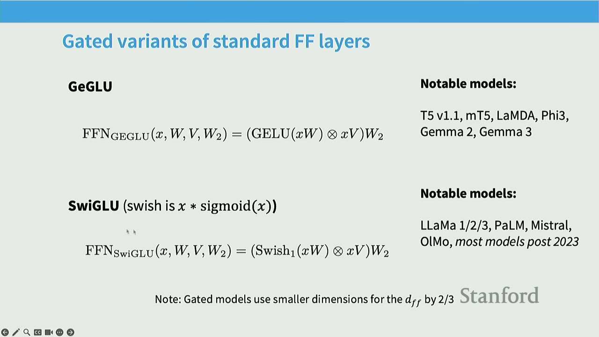
TL;DR - Modern transformer architectures have converged on pre-norm, RMSNorm, and gated linear units (GLUs) for better stability and performance. - Hyperparameter choices, especially the feed-forward dimension to model dimension ratio, show surprising consensus (4x for ReLU, 2.66x for GLU). - Weight decay in large language models (LLMs) is used more for optimization dynamics than for controlling overfitting. - Stability tricks, particularly related to softmax operations, are crucial for training large models. - Innovations like Multi-Query Attention (MQA) and Grouped-Query Attention (GQA) improve inference efficiency, while sparse attention patterns (e.g., sliding window) enable longer context windows.
Key concepts - Pre-norm vs. Post-norm - LayerNorm vs. RMSNorm - Gated Linear Units (GLUs) - Feed-forward dimension ratio - Head dimension to model dimension ratio - Aspect ratio (model dimension vs. number of layers) - Vocabulary sizes - Regularization (Dropout, Weight Decay) - Stability tricks (Z-loss, QK norm, Logit soft-capping) - Attention heads (GQA/MQA, Sparse/Sliding Window Attention) - KV cache
[00:00] Lecture 3: Architectures, Hyperparameters
This lecture will delve into the "nitty-gritty details" of Language Model (LM) architecture and training, covering aspects often omitted in other courses. The goal is to learn from the collective experience of those who have trained many LLMs.
[00:46] Outline and Goals 1. Quick recap of the "standard" transformer (what you implement). 2. What do most of the large LMs have in common? 3. What are common variations to the architecture/training process?
Today's theme: The best way to learn is hands-on experience; the second best way is to try to learn from others' experience.
[01:42] Starting Point: The 'Original' Transformer
The original Transformer architecture (from "Attention Is All You Need") consists of: - Position Embeddings: Sine and cosine functions. - Feed-Forward Network (FFN): ReLU activation, $FFN(x) = \max(0, xW_1 + b_1)W_2 + b_2$. - Normalization: Post-LayerNorm (LayerNorm applied after the residual connection).
We will examine variations in these components, leading to the most modern Transformer variants.
[02:17] What You Implemented - Simple, Modern Variant
The Transformer variant implemented in the assignment is a modern version, not the original "vanilla" Transformer. Key differences include: - LayerNorm: Applied in front of the block (pre-norm). - Position Embeddings: Rotary Position Embeddings (RoPE). - FFN Activation: Uses SwiGLU, not ReLU. - Linear Layers: Linear layers (and LayerNorm) have no bias (constant) terms.
The question arises: Why these specific choices? We will explore these decisions based on empirical evidence from various LLMs.
[03:07] How Should We Think About Architectures?
The field of LLM architectures is rapidly evolving. In the last year alone, there have been over 19 new dense model releases, many with minor architectural tweaks. This proliferation of models (e.g., Command A, OLMo, Gemma, Qwen, Mistral, Falcon) presents a challenge but also a wealth of information. By analyzing what these models have in common and what parts vary, we can understand which architectural choices are truly important.
[04:30] What Are We Going to Cover?
1. Common architecture variations: Activations, FFN, Attention variants, Position embeddings.
2. Hyperparameters that (do or don't) matter: What is ff_dim? Do multi_head_dims always sum to model_dim? How many vocab elements?
3. Stability tricks.
[05:15] Architecture Variations
A high-level overview of various LLMs (from 2017 to 2024) reveals: - Low consensus on many architectural choices, with the exception of pre-norm. - Trends towards 'LLaMA-like' architectures in recent years.
[05:54] Pre-vs-Post Norm
The original Transformer used post-norm, where LayerNorm is applied after the residual connection. $$x_{l+1} = LayerNorm(x_l + MultiHeadAtt(x_l))$$ $$x_{l+1} = LayerNorm(x_l + FFN(x_l))$$ However, very early on, researchers found that moving LayerNorm to before the block (pre-norm) led to much better results. $$x_{l+1} = x_l + MultiHeadAtt(LayerNorm(x_l))$$ $$x_{l+1} = x_l + FFN(LayerNorm(x_l))$$ Almost all modern LMs use pre-norm, with OPT-350M being a notable exception.
[07:13] Pre-vs-Post Norm, the Data
Early papers (e.g., Salazar and Nguyen 2019, Xiong 2020) demonstrated the benefits of pre-norm. - Pre-norm + Stability tricks (like ScaleNorm + FixNorm) allowed models to train without warm-up, achieving comparable or better performance than post-norm with careful warm-up. - This was observed across various tasks, including machine translation (Dev BLEU) and language modeling (Validation Loss on TWSLT and BERT).
[08:10] Pre-vs-Post Norm, Explanations?
- Gradient Attenuation (Xiong 2020): Pre-norm helps maintain constant gradient sizes across layers, preventing them from exploding or vanishing. Post-norm, without warm-up, can lead to exploding gradients.
- Gradient Spikes (Salazar and Nguyen 2019): Pre-norm leads to more stable training with fewer and smaller gradient spikes compared to post-norm.
Today, pre-norm and other LayerNorm tricks are primarily used as stability-inducing aids for training large neural networks, especially with larger learning rates.
[09:14] New Things - 'Double Norm'
A recent innovation (not present in last year's lectures) is the "double norm" approach. - If putting LayerNorms in residual streams is bad, why not put them outside the stream? - Models like Grok and Gemma 2 apply LayerNorms both before and after the attention and FFN blocks (i.e., in front of the residual stream and after the main block output). - OLMo 2 uses LayerNorms only after the attention and FFN blocks (non-residual post-norm). - This approach is argued to be even more stable and easier to train for larger models.
[11:59] LayerNorm vs RMSNorm
- Original Transformer: LayerNorm normalizes the mean and variance across the model dimension ($d_{model}$). $$y = \frac{x - E[x]}{\sqrt{Var[x] + \epsilon}} \cdot \gamma + \beta$$ Notable models using LayerNorm include GPT-2/3/OPT-J, BLOOM.
- Many Modern LMs: RMSNorm does not subtract the mean or add a bias term. $$y = \frac{x}{\sqrt{\frac{1}{D}\sum x_i^2 + \epsilon}} \cdot \gamma$$ Notable models using RMSNorm include LLaMA-family, PaLM, Chinchilla, T5.
[12:38] Why RMSNorm?
- Modern explanation: It's faster and just as good.
- Fewer operations: No mean calculation.
- Fewer parameters: No bias term to store.
- Does this explanation make sense?
- Tensor contractions (matrix multiplies) account for 99.80% of FLOPs, while statistical normalization (LayerNorm/RMSNorm) accounts for only 0.17%. Saving 0.17% of FLOPs doesn't seem like a huge win.
- Important lesson: FLOPs are not runtime! (We will discuss this in far more detail later).
- While normalization is only 0.17% of FLOPs, it accounts for 25.5% of runtime.
- RMSNorm can still matter due to the importance of data movement. Memory movement overhead is a significant factor in runtime, not just FLOPs.
[15:06] RMSNorm - Validation
Narang et al. (2020) showed that RMSNorm provides runtime improvements and, surprisingly, performance gains. - Vanilla Transformer: 3.50 steps/s, Final loss 1.838. - RMSNorm: 3.68 steps/s, Final loss 1.821. - This is a win-win: faster runtime and lower loss.
[15:58] More Generally: Dropping Bias Terms
Most modern Transformers do not have bias terms. - Original Transformer FFN: $FFN(x) = \max(0, xW_1 + b_1)W_2 + b_2$. - Most Implementations FFN (if not gated): $FFN(x) = \sigma(xW_1)W_2$. - Reasons: Similar to RMSNorm, it saves memory and improves optimization stability. Dropping bias terms has been empirically observed to stabilize training.
[17:12] LayerNorm: Recap - Basically everyone does pre-norm. - Intuition: Keep the good parts of residual connections. - Observations: Nicer gradient propagation, fewer spikes. - Some people add a second norm outside the residual stream (not post-norm). - Most people do RMSNorm. - In practice, works as well as LayerNorm. - But, has fewer parameters to move around, which saves on wallclock time. - People more generally drop bias terms since the compute/param tradeoffs are not great.
[18:05] Activations
There's a "whole zoo" of activations: ReLU, GeLU, Swish, ELU, GLU, GeGLU, ReGLU, SeLU, SwiGLU, LiGLU. - It really does matter which activation function is chosen. SwiGLU and other GLU variants consistently work well.
[20:07] A Few of the Common Activations - ReLU: $FFN(x) = \max(0, xW_1)W_2$. - Notable models: Original Transformer, T5, Gopher, Chinchilla, OPT. - GeLU: $FFN(x) = GeLU(xW_1)W_2 = x\Phi(x)W_2$. - Notable models: GPT-1/2/3, GPT-Neox, BLOOM. - SwiGLU / GeGLU (next slide). - Notable models: LLaMa 1/2/3, PaLM, Mistral, OLMo, most models post 2023.
[21:24] Gated Activations (*GLU)ivations
GLUs modify the "first part" of an FF layer. - Original FFN (with ReLU): $FFN(x) = \max(0, xW_1)W_2$. - Instead of a linear + ReLU, augment the above with an (entrywise) linear term: $$\max(0, xW_1) \rightarrow \max(0, xW_1) \otimes (xV)$$ - This gives the gated variant (ReGLU): $$FFN_{ReGLU}(x) = (\max(0, xW_1) \otimes xV)W_2$$ - Note that we have an extra parameter (V).
[22:47] Gated Variants of Standard FF Layers - GeGLU: $FFN_{GeGLU}(x, W, V, W_2) = (GeLU(xW_1) \otimes xV)W_2$. - Notable models: T5 v1.1, mT5, LLaMDA, Phi3, Gemma 2, Gemma 3. - SwiGLU: $FFN_{SwiGLU}(x, W, V, W_2) = (Swish(xW_1) \otimes xV)W_2$. - Notable models: LLaMa 1/2/3, PaLM, Mistral, OLMo, most models post 2023. - Note: Gated models use smaller dimensions for the $d_{ff}$ by 2/3 to keep the total parameter count similar to non-gated counterparts.
[25:49] Do Gated Linear Units Work?
Yes, fairly consistently so. - Shazeer (2020) showed that GLU variants consistently outperform ReLU on various tasks (e.g., CoLA, SST-2). - FFN$_{ReGLU}$ achieved the highest average score (84.67) and accuracy (94.38) among all tested FFN variants. - Narang et al. (2020) corroborated these findings, showing that GLU variants consistently achieve lower losses.
[27:54] Gating, Activations - Many variations (ReLU, GeLU, GLU) across models. - GLU isn't necessary for a good model (see GPT3), but it's probably helpful. - Recent outlier models like Nemotron 340B (Squared ReLU) and Falcon 2 11B (ReLU) also achieve high performance. - But evidence points towards somewhat consistent gains from SwiGLU/GeGLU.
[28:51] Serial vs Parallel Layers
Normal Transformer blocks are serial: they compute attention, then the MLP. - Input comes in, attention is computed, result is passed to MLP, MLP is computed, result is passed forward. - This serial nature can limit parallelism across GPUs.
[29:40] Parallel Layers
A few models (GPT-J, PaLM, GPT-NeoX) do parallel layers. Originally in GPT-J. - Parallel Layers: Instead of serial computation, attention and MLP are computed in parallel and then added to the residual stream. - Standard (serial) formulation: $y = x + MLP(LayerNorm(x)) + Attention(LayerNorm(x))$. - Parallel formulation: $y = x + MLP(LayerNorm(x)) + Attention(LayerNorm(x))$. (Note: The slide shows the same formula for both serial and parallel, but the key difference is that in parallel, MLP and Attention are computed from the same input $x$ and their outputs are summed before adding to $x$). - The parallel formulation can result in roughly 15% faster training speed at large scales, since the MLP and Attention input matrix multiplications can be fused. - If implemented right, LayerNorm can be shared, and matrix multiplies can be fused for systems efficiency. - Recent Models: Cohere Command A, Falcon 2 11B, Command R. - However, most models since then have reverted to serial layers, with only a few exceptions.
[30:43] Summary: Architectures - Pre-vs-Post norm: Everyone does pre-norm (except OPT350M), likely with good reason. - Layer vs RMSNorm: RMSNorm has clear compute wins, sometimes even performance wins. - Gating: GLUs seem generally better, though differences are small. - Serial vs parallel layers: No extremely serious ablations, but has a compute win.
[32:34] Many Variations in Position Embeddings
- Sine embeddings: Add sines and cosines that enable localization.
- $PE_{(pos, 2i)} = \sin(pos/10000^{2i/d_{model}})$
- $PE_{(pos, 2i+1)} = \cos(pos/10000^{2i/d_{model}})$
- Notable models: Original Transformer.
- Absolute embeddings: Add a position vector to the embedding.
- $Embed(x, i) = V_x + U_i$
- Notable models: GPT-1/2/3, OPT.
- Relative embeddings: Add a vector to the attention computation.
- $e_{ij} = \frac{x_i W^Q (x_j W^K + a_{ij})^T}{\sqrt{d_z}}$
- Notable models: T5, Gopher, Chinchilla.
- RoPE embeddings (next slides).
- Notable models: GPTJ, PaLM, most 2024+ models.
[33:29] RoPE: Rotary Position Embeddings
- High level thought process: A relative position embedding should be some function $f(x, i)$ such that:
$$\langle f(x, i), f(y, j) \rangle = g(x, y, i - j)$$
- That is, the attention function only gets to depend on the relative position ($i-j$).
- Existing embeddings do not fully get this property:
- Sine: Has various cross-terms that are not relative.
- Absolute: Obviously not relative.
- Relative embeddings: Is relative, but is not an inner product.
[34:41] RoPE: Rotary Position Embeddings - How can we solve this problem?
- We want our embeddings to be invariant to absolute position.
- We know that inner products are invariant to arbitrary rotation.
- Key Idea: Rotate the word embeddings based on their position.
- If "we" is at position 0, and "know" is at position 1, we rotate "know" by 1 unit.
- If "we" is at position 2, and "know" is at position 3, we rotate "we" by 2 units and "know" by 3 units.
- The relative angle between the rotated vectors remains the same if their relative positions are the same, preserving the inner product.
[36:16] RoPE: Rotary Position Embeddings - There are many rotations, which one do you pick?
- It's easy to think about rotations in 2D. In high-dimensional space, it's not obvious how to rotate.
- RoPE's solution: Pair up the coordinates and rotate them in 2D (motivation: complex numbers).
- Take a high-dimensional vector (e.g., $D=256$).
- Cut it into blocks of 2 dimensions.
- Rotate each 2D block by a specific angle ($\theta_1, \theta_2, \dots$).
- The rotation angle for each pair of dimensions is chosen to capture different frequency ranges (some rotate quickly for local context, others slowly for long-range context).
[37:24] The Actual RoPE Math
- Multiply with sines and cosines.
- The rotation matrix $R_{\Theta, m}^d$ is a block diagonal matrix where each 2x2 block is a standard 2D rotation matrix.
- This is applied to the query and key vectors.
- Difference with sine embeddings: Not additive, no cross terms. This makes it purely relative.
[37:52] Implementation and Code for RoPE
- Multiply with sines and cosines.
- Usual attention stuff: Query, Key, Value projections.
- Get the RoPE matrix cos/sin inputs: Compute rotation angles based on position.
- Multiply query/key by cos/sin: Apply the rotations to the query and key vectors.
- Same stuff as the usual multi-head self attention below.
- Note: Embedding at each attention layer to enforce position invariance. RoPE is applied within the attention mechanism, not as an initial embedding.
[39:03] Hyperparameters
Transformer hyperparameter questions you might have had in 224n: - How much bigger should the feedforward size be compared to hidden size? - How many heads, and should num_heads always divide hidden size? - What should my vocab size be? - Do people even regularize these LMs? - How do people scale these models - very deep or very wide?
[40:03] Surprising (?) Consensus Hyperparameter 1 - Feedforward
- Feedforward - model dimension ratio.
- $FFN(x) = \max(0, xW_1 + b_1)W_2 + b_2$.
- There are two dimensions that are relevant: the feedforward dim ($d_{ff}$) and model dim ($d_{model}$).
- Relationship: $d_{ff} = 4 \cdot d_{model}$.
- This is almost always true. There's just a few exceptions.
[41:00] Exception #1 - GLU Variants
- Remember that GLU variants scale down by 2/3. This means most GLU variants have $d_{ff} = \frac{8}{3} d_{model}$. This is mostly what happens.
- Table of $d_{ff}/d_{model}$ ratios for various models: | Model | $d_{ff}/d_{model}$ | | :----------- | :----------------- | | PaLM | 4 | | Mistral 7B | 3.5 | | LLaMA 2 70B | 3.5 | | LLaMA 70B | 2.68 | | Qwen 14B | 2.67 | | DeepSeek 67B | 2.68 | | Yi 34B | 2.85 | | T5 v1.1 | 2.5 |
- Models are roughly in this range, though PaLM, LLaMA2 and Mistral are slightly larger.
- The 2.66 ratio for GLU variants ensures a similar parameter count to the 4x ratio for ReLU variants.
[42:00] Exception #2 - T5
- As we have (and will) see, most LMs are have boring, conservative hyperparameters.
- One exception is T5 (Raffel et al. 2020) which has some very bold settings.
- In particular, for the 11B model, they set:
- $d_{ff} = 65,536$
- $d_{model} = 1024$
- This results in an astounding 64-times multiplier for $d_{ff}/d_{model}$.
- The T5 paper states: "For '11B' we use $d_{ff} = 65,536$ with 128-headed attention producing a model with about 11 billion parameters. We chose to scale up $d_{ff}$ specifically because modern accelerators (such as the TPUs we train our models on) are most efficient for large dense matrix multiplications like those in the Transformer's feed-forward networks."
- Other recent exceptions (Gemma 2 (8x), SmallLM/Gemma 3 (4x, GLU)) have also used larger multipliers.
[43:00] Why This Range of Multipliers?
- Empirically, there's a basin between 1-10 where this hyperparameter is near-optimal.
- Kaplan et al. (2020) showed that the loss increase is minimal for $d_{ff}/d_{model}$ ratios between 1 and 10.
- The 4x multiplier is a reasonable choice within this optimal range.
[44:00] What Can We Learn from the Model-Dim Hyperparam?
- The 'default' choices of $d_{ff} = 4d_{model}$ and $d_{ff} = 2.66d_{model}$ have worked well for nearly all modern LLMs.
- But T5 does show that even radical choices of $64d_{model}$ can work. This hyperparameter choice isn't written in stone.
- T5 has a follow-up model (T5 v1.1) that is 'improved' and uses a much more standard 2.5 multiplier on GeGLU, so the 64-times multiplier is likely suboptimal.
[45:00] Surprising (?) Consensus Hyperparameter 2 - Multi-Head Self-Attention
- Head-dim * num-heads to model-dim ratio.
- Even though we compute $h$ many attention heads, it's not really more costly.
- We compute $XQ \in \mathbb{R}^{n \times d'}$ and then reshape to $\mathbb{R}^{n \times h \times d/h}$. (Likewise for $XK$, $XV$).
- Then we transpose to $\mathbb{R}^{h \times n \times d/h}$, now the head axis is like a batch axis.
- Almost everything else is identical, and the matrices are the same sizes.
- This doesn't have to be true: we can have head-dimensions > model-dim / num-heads.
- But most models do follow this guideline.
[46:00] How Many Heads, What's the Model Dim?
- Table of ratios for various models: | Model | Num heads | Head dim | Model dim | Ratio ($d_{model} / (h \cdot d_h)$) | | :----------- | :-------- | :------- | :-------- | :---------------------------------- | | GPT3 | 96 | 128 | 12288 | 1 | | T5 | 128 | 128 | 1024 | 16 | | T5 v1.1 | 64 | 64 | 4096 | 1 | | LLaMDA | 64 | 128 | 8192 | 1 | | PaLM | 48 | 258 | 18432 | 1.48 | | LLaMa 2 | 64 | 128 | 8192 | 1 |
- Most models have ratios around 1 - notable exceptions by some Google models.
[47:00] Evidence for 1-1 Ratio?
- There have been papers against the 1-1 ratio (Bhojanapalli et al. 2020).
- They argued that having very few dimensions per head (due to a 1-1 ratio with many heads) can lead to low-rank bottlenecks, affecting expressiveness.
- But we don't seem to be seeing significant 'low rank bottlenecks' in practice. Most models with a 1-1 ratio perform well.
[47:00] Aspect Ratios
- Should my model be deep or wide? How deep and how wide?
- Most models are surprisingly consistent on this one too!
- Table of $d_{model}/n_{layer}$ ratios for various models: | Model | $d_{model}/n_{layer}$ | | :----------- | :-------------------- | | BLOOM | 205 | | T5 v1.1 | 171 | | PaLM (540B) | 156 | | GPT3/OPT/Mistral/Qwen | 128 | | LLaMA/LLaMA2/Chinchilla | 102 | | T5 (11B) | 43 | | GPT2 | 33 |
- There's a sweet spot around 100-200 for this ratio.
[48:00] Considerations About Aspect Ratio
- The Limits of Depth vs Width: Scaling depth is an obvious limiter. Deep models are harder to parallelize across devices and have higher latency.
- Scaling depth is an obvious limiter, i.e., they are non-parallelizable across different machines or devices and every computation has to always wait for the previous layer. This is unlike width, which can be easily parallelizable over thousands or hundreds of thousands of devices.
- Within the limitation of scaling, a wide range of architectures achieve similar performance.
- Evidence on aspect ratio scaling (Kaplan et al. 2020):
- Plots of loss increase vs. aspect ratio ($d_{model}/n_{layer}$) for models of different sizes (50M, 274M, 1.5B parameters).
- A sweet spot for aspect ratio is observed around 100, where loss increase is minimized.
- This sweet spot remains relatively consistent across different model sizes.
- Impact of depth vs. width on upstream vs. downstream performance:
- E.K. et al. (Google) found that for upstream tasks (e.g., negative log-perplexity), parameter count is the only thing that matters; deeper models don't help.
- For downstream tasks (e.g., SuperGLUE accuracy), the story is less clear, but deeper models might be better for the same FLOPs.
[49:00] What Are Typical Vocabulary Sizes?
- Monolingual models: 30-50k vocab.
- Original Transformer: 37000
- GPT: 40257
- GPT-2/3: 50257
- T5/T5v1.1: 32128
- LLaMA: 32000
- Multilingual / production systems: 100-250k.
- mT5: 250000
- PaLM: 256000
- GPT4: 100276
- Command A: 255000
- DeepSeek: 152064
- Yi: 64000
- Monolingual vocabs don't need to be huge, but multilingual ones do.
- As LLMs are deployed more widely and interact with diverse languages and modalities (emojis, etc.), larger vocabularies become necessary.
- Larger models can make good use of larger vocabularies.
[50:00] Dropout and Other Regularization
- Do we need regularization during pretraining?
- Arguments against:
- There is a lot of data (trillions of tokens), more than parameters.
- SGD only does a single pass on a corpus (hard to memorize).
- This is all quite reasonable... but what do people do in practice?
- Arguments against:
[51:00] Dropout and Weight Decay in Practice
- Table of Dropout and Weight Decay for various models: | Model | Dropout* | Weight decay | | :---------------- | :------- | :----------- | | Original Transformer | 0.1 | 0 | | GPT2 | 0.1 | 0 | | T5 | 0.1 | 0 | | GPT3 | 0.1 | 0 | | T5 v1.1 | 0 | 0.1 | | PaLM | 0 | (variable) | | OPT | 0.1 | 0.1 | | LLaMA | 0 | 0.1 | | Qwen 14B | 0 | 0.1 |
- Many older models used dropout during pretraining.
- Newer models (except Qwen) rely only on weight decay.
- Most of the time papers just don't discuss dropout. On open models, this closely matches not doing dropout. This may not be true of closed models.
[52:00] Why Weight Decay LLMs?
- Andriushchenko et al. (2023) has interesting observations about LLM weight decay.
- It's not to control overfitting.
- Different amounts of weight decay don't significantly change the ratio of training loss to validation loss.
- If you train long enough, you end up with the same train-to-val loss gap regardless of weight decay.
- Weight decay interacts with learning rates (cosine schedule).
- With a constant learning rate, models with weight decay start slow but drop rapidly when the learning rate is decreased.
- With a cosine learning rate schedule, models with high weight decay start slow but optimize very rapidly as the learning rate cools down.
- There's a complex interaction between the optimizer, weight decay, and implicit acceleration at the tail end of training that leads to better models.
- The purpose of weight decay in LLMs is to achieve better training losses, not primarily to regularize against overfitting.
[53:00] Summary: Hyperparameters - Feedforward: Factor-of-4 rule of thumb (8/3 for GLUs) is standard (with some evidence). - Head dim: Head dim * Num head = D model is standard. - Aspect ratio: Wide range of 'good' values (100-200). Systems concerns dictate the value. - Regularization: You still 'regularize' LMs but its effects are primarily on optimization dynamics.
[54:00] Stability Tricks
Recently, lots of attention on stable training. - As models get bigger and are trained longer, stability issues become more prominent. - A common problem is exploding gradients, which leads to unstable training and divergence. - The goal is to turn an unstable training curve (like the blue one with high gradient spikes) into a stable one (like the orange one with low gradient norms).
[55:00] Where Do the Issues Arise? Beware of Softmaxes!
- Softmaxes can be ill-behaved due to exponentials / division by zero.
- There are two softmaxes in a Transformer:
- The output softmax (at the very end of the decoder).
- The softmax within the self-attention mechanism.
[56:00] Output Softmax Stability - The 'Z-loss'
- Recall the softmax calculation: $$P(x) = \frac{e^{U_r(x)}}{Z(x)}$$ $$Z(x) = \sum_{r'=1}^V e^{U_{r'}(x)}$$ $$\log P(x) = U_r(x) - \log Z(x)$$
- This is useful for stability! PaLM pioneered this 'z-loss' trick.
- They added an auxiliary loss of $Z_{loss} = 10^{-4} \sum_i (\log Z(x_i) - 0)^2$ to encourage the softmax normalizer $\log Z$ to be close to 0.
- This forces $Z(x)$ to be close to 1.
- If $Z(x)$ is close to 1, then $\log Z(x)$ is close to 0.
- This makes $\log P(x) \approx U_r(x)$, effectively removing the problematic exponential and division.
- This increased the stability of training.
- Other examples: Baichuan 2 (2023), DCLM (2024), OLMo 2 (2025).
[57:00] Attention Softmax Stability - The 'QK Norm'
- The other softmax we have to deal with is in the attention operation.
- The query and keys are Layer (RMS) normed before going into the softmax operation.
- This is an innovation from the vision and multimodal model community.
- Dehgani (2023) trained very large vision transformers.
- IDefCS, Chameleon (Hugging Face) used these tricks for their multimodal components.
- It was then picked up by several others: DCLM, OLMo 2, Gemma 2.
- This technique stabilizes the softmax by bounding the inputs, naturally controlling bad behavior.
[58:00] Logit Soft-Capping
- Soft-capping the logits to some maximum value via Tanh.
- Bello et al. (2016) in each attention layer and the final layer ensure that the value of the logits stays between -soft_cap and +soft_cap.
- The logits are passed through: $logits \leftarrow soft\_cap \cdot \tanh(logits/soft\_cap)$.
- Set the soft_cap parameter to 50.0 for the self-attention layers and to 30.0 for the final layer.
- This prevents logits from blowing up, but also might have perf issues.
- This technique hasn't been as widely adopted as QK norm.
[59:00] Attention Heads
- Most models don't touch the attention heads much at all with a few minor exceptions.
- GQA / MQA: Saving inference costs by reducing the number of heads.
- Sparse or sliding window attention (GPT4/Mistral): Restricting the attention pattern to reduce compute cost.
- Exotic SSM stuff (Jamba, Falcon 3, etc): Not covered (sorry!).
[1:00:00] GQA/MQA - Reducing Attention Head Cost
- Let's think about the compute involved for attention.
- Total arithmetic operations: $O(bn d^2)$.
- Total memory accesses: $O(bnd + bhn^2 + d^2)$.
- Arithmetic intensity is high $O(\frac{n}{d} + \frac{1}{b})^{-1}$ - need large batches + short seq length (n) or big model dimensions (d) - we can keep our GPUs running.
- What about the incremental case when we generate text?
- Key difference: Can't parallelize the generation process - needs to be step by step.
- In this case - we need to incrementally re-compute/update attention via the 'KV cache'.
- When generating text, we process one token at a time, conditioning on previous tokens.
- The KV cache stores the keys and values from previous tokens, so they don't need to be recomputed.
- This is essential for efficient inference.
[1:02:00] GQA/MQA - Reducing Attention Head Cost (cont.)
- What's the incremental arithmetic intensity?
- When using the KV cache, the total arithmetic operations remain $O(bn d^2)$.
- However, the memory access pattern changes significantly. We are repeatedly loading in matrices (keys, values) from memory.
- The arithmetic intensity becomes $O(\frac{n}{d} + \frac{1}{b})^{-1}$.
- This means arithmetic intensity is not good. We need large batches and short sequence lengths, or big model dimensions.
- The $n/d$ term is difficult to reduce.
[1:03:00] MQA - Just Have Fewer Key Dimensions.
- Key idea: Have multiple queries, but just one dimension for keys and values.
- Instead of having $h$ separate key and value heads, we have a single key and value head that is shared across all query heads.
- This significantly reduces the size of the KV cache, as we only store one set of keys and values.
- We have much fewer items to move in and out of memory (KV Cache).
- Total memory access: $O(bnd + bn^2 + d^2)$.
- Arithmetic intensity: $O(\frac{n}{d} + \frac{1}{b})^{-1}$.
- This improves inference efficiency, especially for long sequence lengths.
[1:04:00] Recent Extension - GQA
- Don't go all the way to one dimension of KV - have fewer dims.
- Instead of a single key and value head (MQA), Grouped-Query Attention (GQA) groups query heads and shares a key/value head among each group.
- This provides a simple knob to control expressiveness (key-query ratio) and inference efficiency.
[1:04:00] Does MQA Hurt? Sometimes.
- Some work shows that MQA can lead to a small perplexity hit (Shazeer 2019).
- Other work shows low/no hit with GQA (Ainslie 2023).
- The trade-off is between inference speed and model quality.
[1:04:00] Sparse / Sliding Window Attention
- Attending to the entire context can be expensive (quadratic).
- Build sparse / structured attention that trades off expressiveness vs runtime (GPT3).
- Instead of computing attention for all pairs of tokens, we restrict the attention pattern to a local window or a strided pattern.
- This reduces the computational cost from $O(N^2)$ to $O(N \cdot \text{window_size})$.
[1:04:00] Sliding Window Attention
- Another variation on this idea - sliding window attention.
- At each layer, only pay attention to a small region around your current position.
- This also controls the total amount of resources needed for longer contexts.
- Your effective receptive field is now the local one times kind of the layers.
[1:04:00] Current Standard Trick - Interleave 'Full' and 'LR' Attention
- From Cohere Command A - Every 4th layer is a full attention.
- This is a very clever trick to both control the systems aspects of things (full attention only happens every now and then) and the length extrapolation aspect.
- Rope only deals with local context windows, and anything that's really really long range has no position embeddings at all.
- This allows for very aggressive extrapolation, as there's no position extrapolation to deal with.
[1:04:00] Recap, Conclusion, etc.
- Many aspects (architecture, hyperparameters) of Transformers are in parallel in common across the big LMs.
- Major differences: Position embeddings, tokenization.
Practical Takeaways - When building LLMs, prioritize pre-norm for stability. - RMSNorm is generally preferred over LayerNorm for efficiency without sacrificing performance. - GLU variants (GeGLU, SwiGLU) are the current state-of-the-art for FFN activations. - Follow established hyperparameter ratios (e.g., $d_{ff} = 4d_{model}$ or $8/3 d_{model}$ for GLUs, $d_{model} / (h \cdot d_h) \approx 1$). - Weight decay is crucial for optimizing LLMs, even if not for traditional overfitting control. - Implement stability tricks, especially for softmax operations (Z-loss, QK norm, logit soft-capping). - Consider MQA/GQA for inference efficiency and sparse attention patterns for longer context windows.
Open Questions / Things to Remember - The exact theoretical reasons for the superior stability of pre-norm and RMSNorm are still being actively researched, but empirical evidence is strong. - The interaction between weight decay and learning rate schedules is complex and crucial for optimal training. - The field is still evolving, with new architectural tweaks and stability tricks emerging regularly (e.g., double norm, interleaved attention patterns). - System-level considerations (memory movement, parallelism constraints) increasingly influence architectural choices.